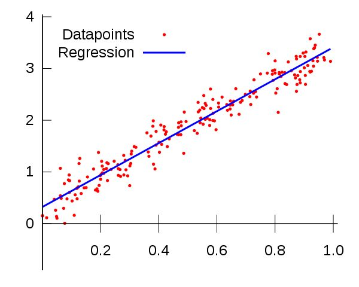
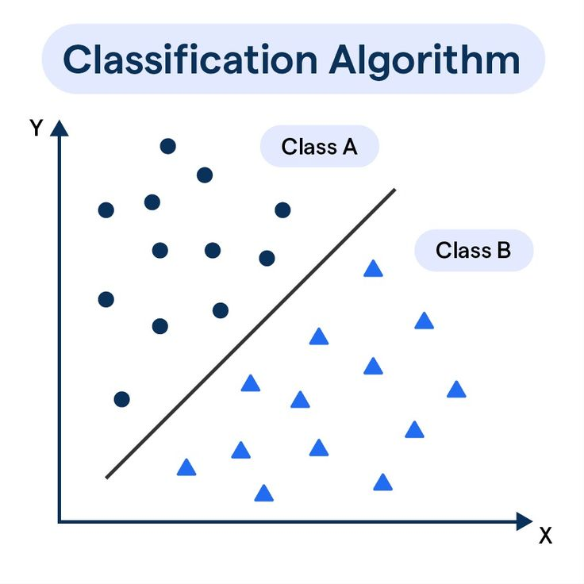
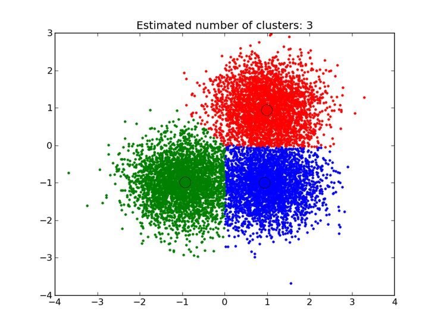

Description:
General Definition
- Regression is a statistical method used to understand relationships between variables and to make predictions. It estimates the value of one thing (the dependent variable) based on the values of one or more other things (the independent variables).
- Think of it as a way to answer questions like:
- How much will sales increase if we spend more on advertising?
- What will the temperature be tomorrow based on historical weather data?

Types of Regression
- Regression comes in many forms, depending on the problem:
- Linear Regression: Assumes a straight-line relationship between variables.
- Example: Predicting house prices based on size.
- Polynomial Regression: Handles more complex relationships by fitting curves.
- Example: Predicting crop yield based on rainfall and temperature patterns.
- Logistic Regression: Used for problems where the outcome is a category (e.g., yes/no, true/false).
- Example: Predicting whether a customer will buy a product.
- Ridge and Lasso Regression: Advanced versions of Linear Regression used when there are many variables.
- Example: Predicting stock prices using multiple financial indicators.
- Multiple Regression: Explores the relationship between one dependent variable and multiple independent variables.
- Example: Predicting a car’s fuel efficiency based on weight, engine size, and age.
Use Cases
- Regression methods are widely used across industries:
- Business: Forecasting revenue, customer demand, or sales based on marketing data.
- Healthcare: Predicting patient outcomes like recovery time or disease progression.
- Economics: Analyzing relationships between factors like inflation and unemployment.
- Environment: Estimating climate changes based on greenhouse gas emissions.
- Sports: Predicting team performance based on player statistics.
Real-World Problems Regression Can Handle
- Estimating housing prices based on location, size, and amenities.
- Forecasting electricity consumption in a city based on weather and population.
- Predicting the likelihood of a loan default based on credit score and income.
- Determining how much profit a business will make based on costs and market trends.
Strengths of Regression
- Flexibility: Can model simple relationships (like Linear Regression) or complex ones (like Polynomial Regression).
- Interpretability: Shows how variables influence each other.
- Predictive Power: Useful for making future estimates.
- Customizability: Adaptable to different types of data and relationships.
Weaknesses of Regression
- Overfitting: If the model is too complex, it may perform poorly on new data.
- Assumption Dependence: Many types of regression rely on specific assumptions about data (e.g., Linear Regression assumes linear relationships).
- Sensitive to Outliers: Extreme data points can distort predictions.
- Multicollinearity: Strong correlations between independent variables can confuse the model.
Real-Life Examples
- Example 1: Predicting Exam Scores
- A teacher uses regression to predict student scores based on study hours and attendance.
- Example 2: Predicting Climate Impact
- Scientists use regression to estimate future sea levels based on greenhouse gas emissions and global temperatures.
- Example 3: Loan Approval
- Banks use logistic regression to decide whether to approve loans. The model predicts the likelihood of repayment based on factors like income and debt.
-
Formula:
\text{Score} = 5 \times \text{Study Hours} + 2 \times \text{Attendance}
When Is Regression a Good Choice?
- When the goal is to predict or estimate outcomes.
- When you want to understand the relationship between variables.
- When data is structured and relationships between variables can be quantified.
When Not to Use Regression
- When the data is highly complex and involves patterns regression can't capture (e.g., images or text).
- When relationships between variables are not clear or meaningful.
- When there's insufficient data to train the model effectively.
Key Takeaways
- Regression is a versatile tool for analyzing and predicting real-world phenomena. It works best when:
- The relationships between variables are clear and can be quantified.
- There's enough quality data to make accurate predictions.
Description:
General Definition
- Classification is a machine learning and statistical method used to group data into predefined categories or labels. It predicts which category an item belongs to based on input data.
- For example:
- Email filters classify messages as spam or not spam.
- A medical diagnosis system classifies whether a tumor is benign or malignant.

Types of Classification
- Classification techniques vary based on the type of problem and data:
- Binary Classification: Used when there are only two possible outcomes.
- Example: Predicting whether a loan will be approved (yes/no).
- Multi-class Classification: Deals with problems involving more than two categories.
- Example: Classifying a type of animal as dog, cat, or bird.
- Multi-label Classification: Each item can belong to multiple categories simultaneously.
- Example: Classifying a movie as both action and comedy.
- Imbalanced Classification: Designed to handle datasets where one category significantly outnumbers others.
- Example: Detecting rare diseases where most cases are healthy.
Use Cases
- Classification is widely used in areas requiring decision-making or categorization:
- Healthcare: Predicting disease diagnosis based on symptoms.
- Finance: Detecting fraudulent transactions.
- Retail: Recommending products based on past purchases.
- Education: Classifying students into performance categories (e.g., excellent, average, below average).
- Technology: Identifying objects in images or videos.
Real-World Problems Classification Can Handle
- Email systems predicting whether a message is spam or not.
- Social media platforms classifying content into categories like sports, news, or entertainment.
- Self-driving cars recognizing road signs or pedestrians.
- Banks assessing the creditworthiness of loan applicants.
Strengths of Classification
- Wide Applicability: Useful for both simple and complex decision-making problems.
- Automation: Shows how variables influence each other.Can replace manual categorization tasks, saving time and effort.
- High Accuracy: Well-trained models often outperform human decision-making.
- Customizable Models: Adaptable to different data types, from text to images.
Weaknesses of Classification
- Dependence on Quality Data: Performance heavily relies on having accurate and representative training data.
- Overfitting: Complex models might perform well on training data but fail with new data.
- Class Imbalance: Models can struggle if one category dominates the dataset.
- Limited Interpretability: Some classification models (like neural networks) can act as black boxes, making it hard to understand how they arrive at predictions.
Real-Life Examples
- Example 1: Fraud Detection
- A bank uses classification to flag transactions as either fraudulent or legitimate based on features like transaction amount, location, and time.
- Example 2: Image Recognition
- A smartphone uses classification to identify whether an image contains a dog, cat, or human.
- Example 3: Customer Segmentation
- An e-commerce company classifies customers as high spenders, medium spenders, or low spenders based on purchase history.
When Is Classification a Good Choice?
- When the goal is to assign categories to data.
- When decisions need to be made automatically based on input data (e.g., approving or rejecting an application).
- When patterns in the data are meaningful and can be linked to specific outcomes.
When Not to Use Classification
- When there are no clear categories to assign data (e.g., predicting numerical values—this is regression).
- When the relationships between inputs and categories are too complex to model effectively.
- When there is a lack of enough labeled data to train the model.
Key Takeaways
- Classification is a powerful tool for decision-making and automation. Its success depends on the quality of data and the problem being addressed. When used effectively, it can make processes faster, more accurate, and more efficient.
- Think of classification as a decision-making assistant: it learns from past examples and applies that knowledge to new situations to decide which category something belongs to.
Description:
General Definition
- Clustering is an unsupervised machine learning method used to group similar data points into clusters (or groups) based on their characteristics. Unlike classification, clustering doesn’t require predefined categories or labels. Instead, it discovers patterns and structures within data.
- For example:
- An online retailer might group customers based on purchasing behavior.
- A botanist could cluster plants based on their physical traits.

Types of Clustering
- There are various approaches to clustering, each suited for different kinds of problems:
- Centroid-Based Clustering: Groups data points around central points (centroids).
- Example: Segmenting customers by purchasing patterns.
- Hierarchical Clustering: Builds a hierarchy of clusters, either by merging smaller clusters (agglomerative) or splitting larger ones (divisive).
- Example: Organizing species in biology based on similarities.
- Density-Based Clustering: Forms clusters where data points are densely packed, separating outliers.
- Example: Identifying geographical areas of high population density.
- Distribution-Based Clustering: Assumes clusters follow a probability distribution and assigns data points accordingly.
- Example: Analyzing genetic sequences for shared traits.
- Fuzzy Clustering: Assigns data points to multiple clusters with varying degrees of membership.
- Example: Grouping consumers who overlap in buying preferences.
Use Cases
- Clustering is widely used in areas requiring discovery of hidden patterns or grouping similar data points:
- Marketing: Segmenting customers into groups based on demographics and behavior.
- Healthcare: Grouping patients by symptoms or genetic profiles for personalized treatment.
- Retail: Categorizing products based on customer preferences and purchase history.
- Image Processing: Identifying similar patterns or features in image data.
- Urban Planning: Clustering locations based on crime rates or traffic patterns.
Real-World Problems Clustering Can Handle
- Grouping search engine results based on similar topics.
- Identifying potential markets for a product by clustering regions with similar demographics.
- Detecting anomalies (outliers) in network traffic to identify cyber-attacks.
- Classifying different types of stars in astronomy based on their properties like brightness and temperature.
- Grouping social media users with similar interests or posting habits.
Strengths of Clustering
- No Labels Required Works without predefined categories, making it suitable for exploratory tasks.
- Pattern Discovery:Automation: Reveals hidden relationships and structures in data.
- Flexible Applications: Can handle a wide variety of data types (numerical, categorical, text, etc.).
- Versatile: Useful in both small and large datasets.
Weaknesses of Clustering
- Choosing the Number of Clusters: Deciding how many clusters to form can be subjective.
- Sensitive to Noise and Outliers: Some clustering methods (e.g., K-Means) are easily influenced by extreme values.
- Interpretability: Clusters may not always have a clear meaning or real-world relevance.
- Scalability: Computationally expensive for very large datasets.
- Dependence on Data Representation: The quality of clustering relies heavily on how the data is structured and preprocessed.
Real-Life Examples
- Example 1: Customer Segmentation
- A retail company uses clustering to group customers into:
- Frequent buyers.
- Occasional buyers.
- One-time buyers. This helps tailor marketing strategies for each group.
- Example 2: Social Media Analysis
- A social media platform clusters users based on their interests to recommend relevant content or ads.
- Example 3: Fraud Detection
- Banks cluster transaction patterns and flag unusual clusters as potential fraud.
When Is Clustering a Good Choice?
- When the goal is to discover natural groupings in data.
- When no labels or categories are available.
- When seeking to understand the underlying structure of data.
When Not to Use Clustering
- When the data is well-labeled, making classification a better option.
- When there's no meaningful grouping to be discovered in the data.
- When the data has too many noisy or irrelevant features.
Key Takeaways
- Clustering is a powerful tool for exploring and organizing data when you don't know what patterns to expect. It excels at uncovering hidden relationships and dividing data into meaningful groups.
- Think of clustering as a way to organize a messy room: it groups similar items together (e.g., books, clothes, gadgets) without needing a predefined list. This flexibility makes clustering invaluable in fields like marketing, healthcare, and urban planning, where discovering insights from raw data is key.